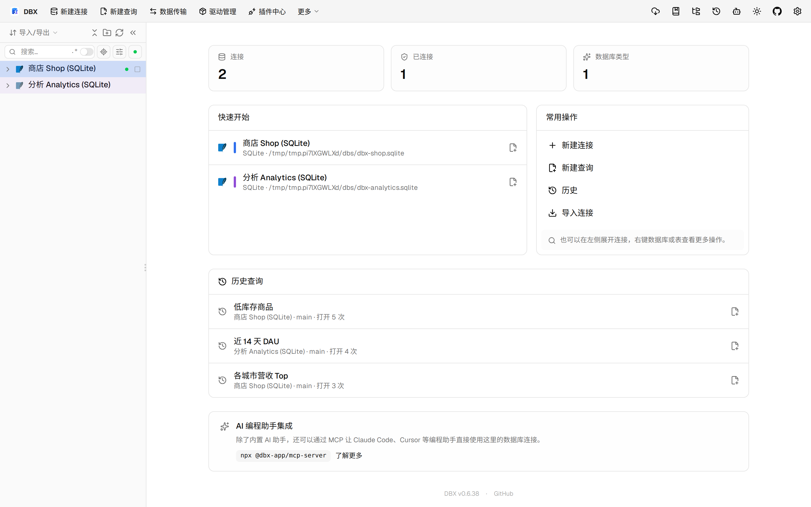
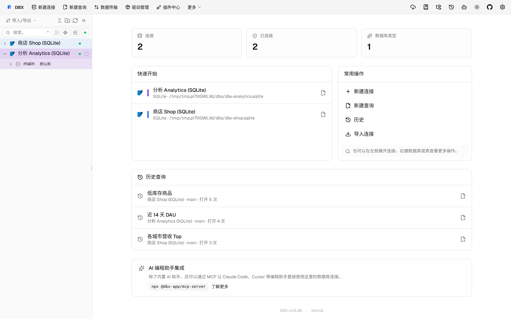
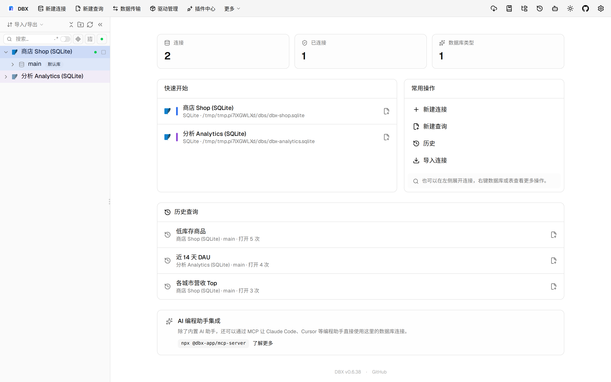
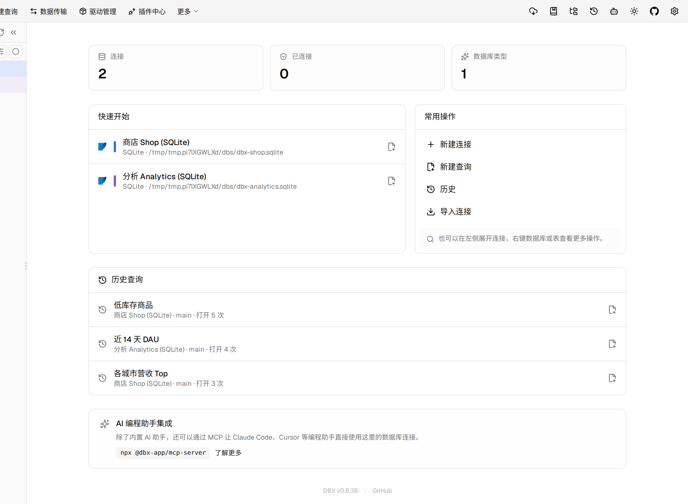

#11544 界面预览
commit a4a82f2 · 回到 PR · 这次改动让 OceanBase Oracle 的查询与表浏览在遇到大 CLOB 时先显示有界预览，后续可按需读取完整内容，并且在数据网格保存、取消和导出时更稳妥地释放这类大值资源。编辑器的列补全与诊断也改为更尊重 OceanBase 的当前 schema / 同义词上下文。
⚠️ 这次录制有 9 步没能按计划执行；带 ⚠️ 的截图拍摄于步骤失败之后，画面未必是说明文字所描述的状态。
红线是鼠标走过的轨迹，红色圆环是一次点击；底部文字是这一步在做什么。多个场景各自从应用初始状态开始。空格暂停，← → 逐段查看。

⚠️ 大值预览与按需入口 · 打开 customers 表后的数据网格

⚠️ 大值预览与按需入口 · 打开 events 表后的数据网格

⚠️ 保存时的行级反馈 · 打开订单表后的数据网格，观察保存和行状态反馈入口

OceanBase 补全与诊断上下文 · 显示编辑器所在位置，说明本次改动也影响 OceanBase Oracle 的补全和诊断上下文